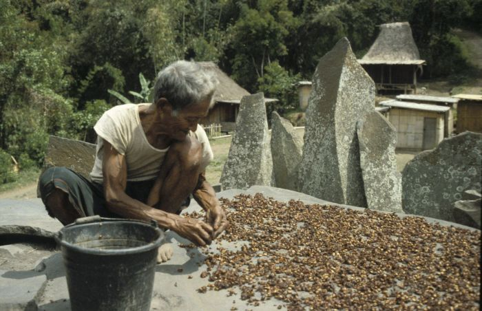

-
Indonesia
The Dutch governor in Malabar (India) sent arabica coffee (Coffea arabica) seedlings from Yemen to the Dutch governor of Batavia (now Jakarta) in 1696. The first seedlings failed due to flooding in Batavia. The second shipment of seedlings was sent in 1699 with Hendrik Zwaardecroon.[4] The plants grew, and in 1711 the first exports were sent from Java to Europe by the Dutch East India Company—formally Verenigde Oostindische Compagnie and abbreviated VOC—reaching 2000 pounds shipped in 1717.[5] Coffee arriving in Amsterdam sold for high prices, 1 kg (2 lb) costing nearly one per cent of the average annual income.[6] Indonesia was the first place, outside of Arabia and Ethiopia, where coffee was widely cultivated.[7]
The coffee was shipped to Europe from the port of Batavia (now Jakarta). There has been a port at the mouth of Ciliwung River since 397 AD, when King Purnawarman established the city he called Sunda Kelapa. Today, in the Kota area of Jakarta, one can find echoes of the seagoing legacy that built the city. Sail driven ships still load cargo in the old port. The Bahari museum occupies a former warehouse of the VOC, which was used to store spices and coffee. Menara Syahbandar (or Lookout Tower) was built in 1839 to replace the flag pole that stood at the head of wharves, where the VOC ships docked to load their cargos.[8]
In the 18th century, coffee shipped from Batavia sold for 3 Guilders per kilogram in Amsterdam. Since annual incomes in Holland in the 18th century were between 200 and 400 Guilders, this was equivalent to several hundred dollars per kilogram today. By the end of the 18th century, the price had dropped to 0.6 Guilders per kilogram and coffee drinking spread from the elite to the general population.[9] The East Indies were the most important coffee supplier in the world during this period and it was only in the 1840s that their stranglehold on supply was eclipsed by Brazil.[7]
 The coffee trade was very profitable for the VOC, and for the Dutch East Indies government that replaced it in 1800, but was less so for the Indonesian farmers who were forced to grow it by the colonial government from 1830 to around 1870 under the Cultuurstelsel (Cultivation system). Production of export crops were delivered to government warehouses instead of taxes. Coffee, along with sugar and indigo, was one of the main crops produced under this highly exploitative colonial system. Cultuurstelsel was applied to coffee in the Preanger region of West Java, as well as in West Sumatra, South Sulawesi and the Minahasa region of North Sulawesi. This corrupt system, which diverted labor from rice production and caused great hardship for farmers, was immortalized through an influential novel by Eduard Douwes Dekker (pen name - Multatuli) in 1860 titled Max Havelaar: Or the Coffee Auctions of the Dutch Trading Company. This book helped to change Dutch public opinion about the "Cultivation System" and colonialism in general. More recently, the name Max Havelaar was adopted by one of the first fair trade organizations.[9]
By the mid-1870s the Dutch East Indies expanded arabica coffee-growing areas in Sumatra, Bali, Sulawesi and Timor. In Sulawesi the coffee was thought to have been planted around 1850.[10] In North Sumatra highlands coffee was first grown near Lake Toba in 1888, followed in Gayo highland (Aceh) near Lake Laut Tawar in 1924. Coffee at the time was also grown in East Indonesia- East Timor and Flores. Both of these islands were originally under Portuguese control and the coffee was also C. arabica, but from different root stocks. The coffee in Eastern Indonesia was not affected to the same degree by rust, and even today, it is believed that some coffee in East Timor can be traced back to the 18th century.
In the late eighteen hundreds, Dutch colonialists established large coffee plantations on the Ijen Plateau in eastern Java. However, disaster struck in the 1876, when the coffee rust disease, Hemileia vastatrix, swept through Indonesia, wiping out most of the Arabica Typica cultivar. Robusta coffee (C. canephor var. robusta) was introduced to East Java in 1900 as a substitute, especially at lower altitudes, where the rust was particularly devastating. Robusta coffee was introduced to smallholders around Kerinci around 1915, and then spread quickly across southern Sumatra during the 1920s, where production soon eclipsed Java.[5] The region remains the most important producing region by volume today.[11]
Dutch-owned plantations on Java were nationalized in the 1950s, soon after independence. and are now managed as state-owned plantations under PTPN - Perusahaan Terbatas Perkebunan Nusantara, and revitalized with new varieties of Coffea arabica in the 1950s.[12] These varieties were also adopted by smallholders through the government and various development programs.